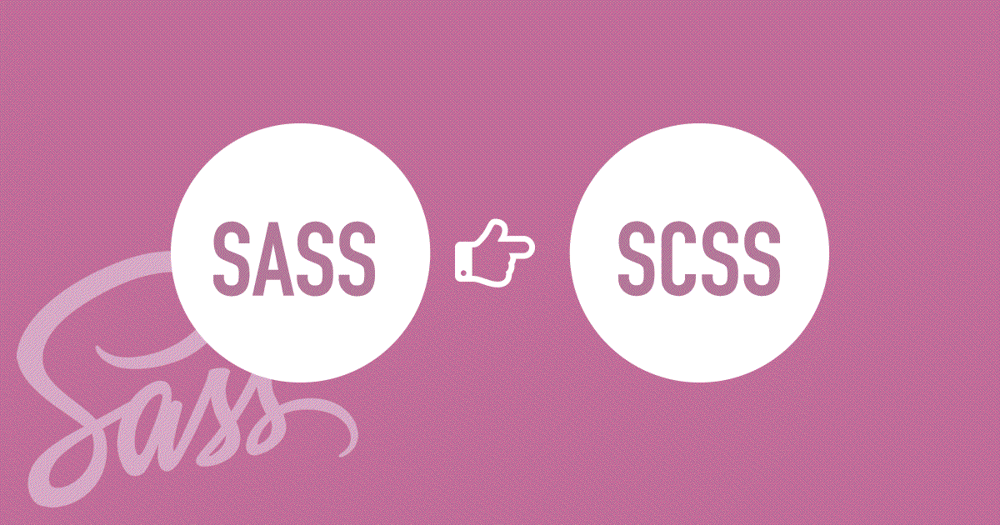
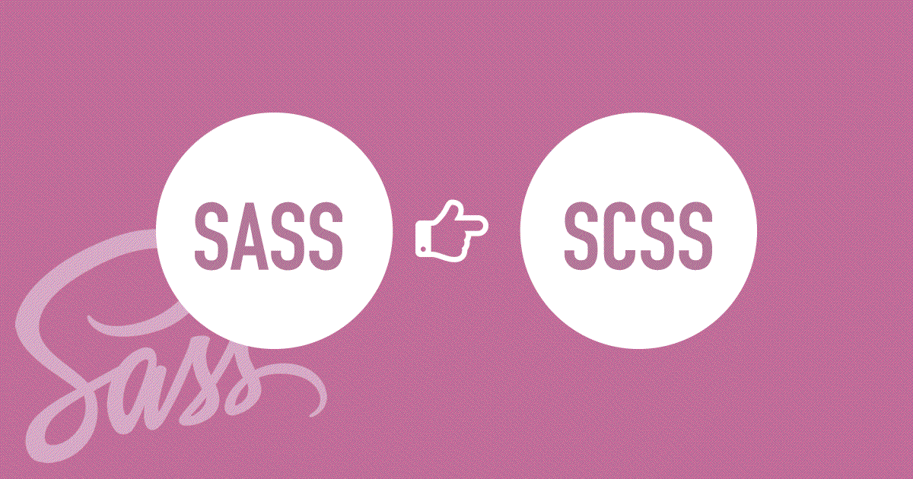

Sass является наиболее развитым и стабильным расширением CSS профессионального уровня.
Совместимость с CSS Sass полностью совместим со всеми версиями CSS. Мы уделяем серьезное внимание совместимости, поэтому вы можете легко использовать любые доступные библиотеки CSS.
Разнообразие возможностей Sass может похвастаться большим количеством возможностей, чем любой другой язык расширения CSS. Команда Sass Core бесконечно работает не только для поддержания этих возможностей, но и для того, чтобы быть впереди.
Написание CSS само по себе весело, но когда таблица стилей становится огромной, то становится и сложно её обслуживать. И вот в таком случае нам поможет препроцессор. Sass позволяет использовать функции недоступные в самом CSS, например, переменные, вложенности, миксины, наследование и другие приятные вещи, возвращающие удобство написания CSS. Как только Вы начинаете пользоваться Sass, препроцессор обрабатывает ваш Sass-файл и сохраняет его как простой CSS-файл, который Вы сможете использовать на любом сайте. Самый простой способ получить такой результат - использовать терминал. После того, как Sass установлен, вы можете компилировать ваш Sass в CSS, используя команду sass. Вам всего лишь нужно сообщить Sass, где взять файл Sass и в какой файл CSS его скомпилировать. Например, запустив команду sass input.scss output.css в терминале, вы сообщаете Sass взять один Sass файл, input.scss, и скомпилировать в файл output.css.
Думайте о переменных, как о способе хранения информации, которую вы хотите использовать на протяжении написания всех стилей проекта. Вы можете хранить в переменных цвета, стеки шрифтов или любые другие значения CSS, которые вы хотите использовать. Чтобы создать переменную в Sass нужно использовать символ $.
FrontEnd разработчик создает видимую для пользователя часть веб-страницы и его главная задача – точно передать в верстке то, что создал дизайнер, а также реализовать пользовательскую логику.
Для того, чтобы стать FrontEnd разработчиком, не нужны знания математики. Освоить специальность Вы сможете за 3-6 месяцев, в зависимости от того, сколько времени будете уделять теории и кодингу. Наша программа обучения выверена на практике и включает в себя самые необходимые и современные технологии
Фоточки
 


Статья

Вы можете создавать фрагменты Sass-файла, которые будут содержать в себе небольшие отрывки CSS, которые можно будет использовать в других Sass-файлах. Это отличный способ сделать ваш CSS модульным, а также облегчить его обслуживание. Фрагмент — это простой Sass-файл, имя которого начинается с нижнего подчеркивания, например, _partial.scss. Нижнее подчеркивание в имени Sass-файла говорит компилятору о том, что это только фрагмент и он не должен компилироваться в CSS. Фрагменты Sass подключаются при помощи директивы @import.
При написании HTML, Вы, наверное, заметили, что он имеет четкую вложенную и визуальную иерархию. С CSS это не так. Sass позволит вам вкладывать CSS селекторы таким же образом, как и в визуальной иерархии HTML. Но помните, что чрезмерное количество вложенностей делает ваш документ менее читабельным и воспринимаемым, что считается плохой практикой.